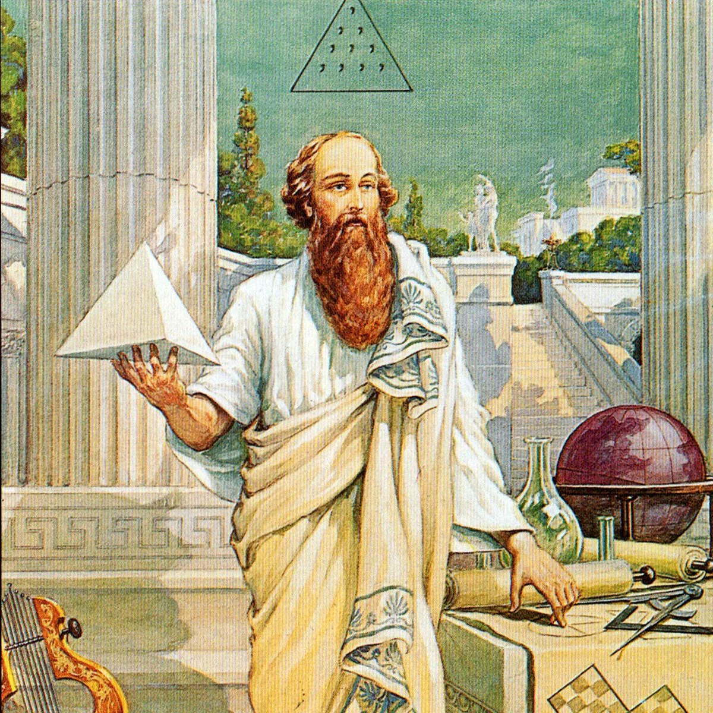

Жизнь — это драма, из которой выкинули скучные отрывки.
Альфред Хичкох


Депрессия подобна даме в черном. Если она пришла, не гони ее прочь, а пригласи к столу, как гостью, и послушай то, о чем она намерена сказать. Карл Густав Юнг
